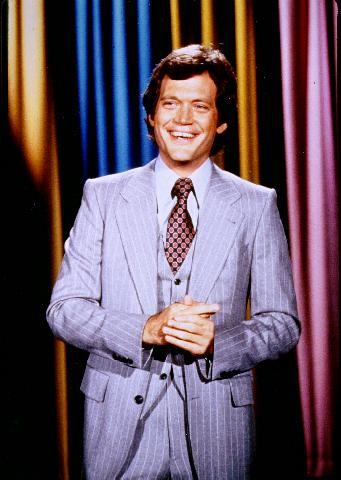
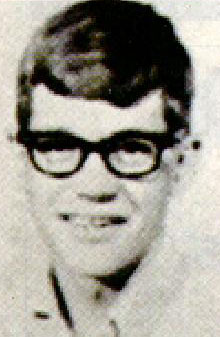
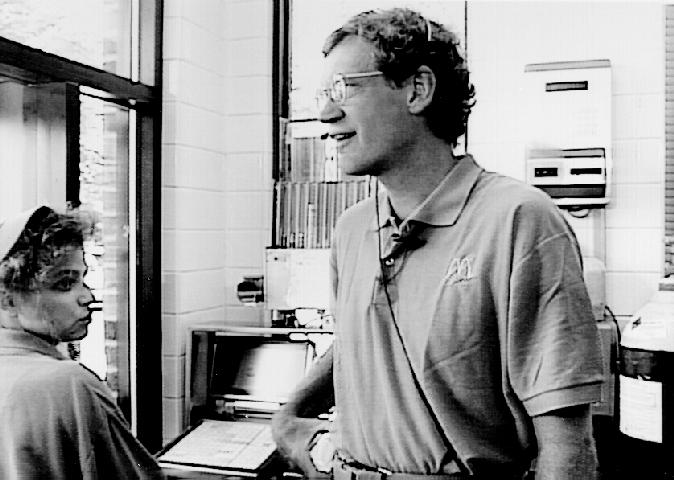
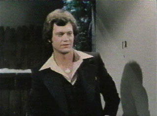
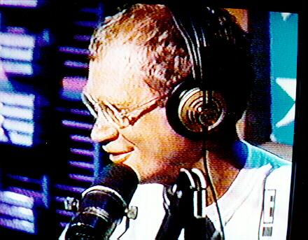
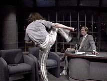
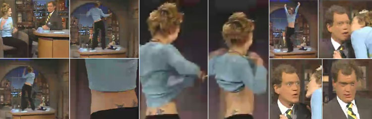
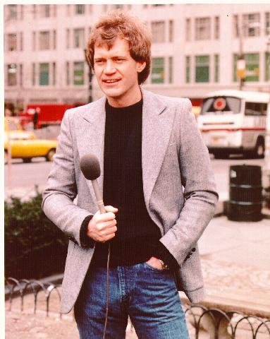
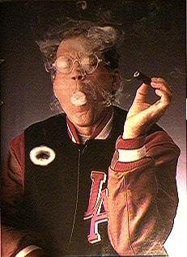

rotten > Library > Biographies > Entertainers > Comic > David Letterman
David Letterman
|
"We've done over 2000 shows. You do that many
shows, some are gonna suck, some are gonna eat, and some are just gonna
blow."
|
|  David
Letterman began his career in broadcasting in Indianapolis, Indiana, working
as a weekend weatherman. In 1975, he moved to Los Angeles and wrote comedy,
appearing on Mary Tyler Moore, The Gong Show, and $20,000 Pyramid.
His stand-up routines alongside Jay Leno led to a 1978 appearance on The
Tonight Show with Johnny Carson, and ultimately Letterman's flagship
broadcast, Late Night with David Letterman.
When Johnny Carson retired in 1991,
Letterman was astonished to learn the career he'd been eyeing his entire
life had been handed over to Jay Leno. To this day, The Tonight Show
and Late Night continue to steal bits from each other, but working
for Late Night is universally heralded as a comedian's dream job,
inspiring an incestuous group of writers and producers who share material
across Conan O'Brien, Craig Kilborn, The Onion, The Simpsons, and
The Daily Show. |
| In one classic bit from 1993, Dave takes a part-time
job at McDonald's and harasses drive-thru customers. |
CUSTOMER:
Hi. Can I have two cheeseburgers and a small order of fries.
LETTERMAN:
You know, ma'am, we're really busy. Can I
ask you to circle the lot once or twice so we can kind of collect ourselves
here? If you don't mind, it would really help us out a lot. We're just
up to our necks here.
CUSTOMER:
Who is this?
LETTERMAN:
None of your business. Just circle the lot and we'll pick you up the next
time, all right? Circle the lot.
The car takes off and circles the lot. Later he gets
a job at Taco Bell, announcing that meals for Mexicans are half price.
|
 |
| It's remarkable how little is known about David
Letterman's personal life. Often people extract what they can from stray
cameos in movies like Chris Elliot's Cabin Boy, where he played
a sarcastic villager who calls Chris Elliot "Jennifer". In films
like Man On The Moon and Private Parts, Letterman prefers
to appear as himself. To this day he remains intensely private, but periodically
leaks information during polite, intimate interviews. He has a fondness
for old British films - actress Myrna Loy in particular - and tales of
unrequited love. The original versions of Goodbye, Mr. Chips
and The Ghost and Mrs. Muir reduce him to tears. Beavis
and Butthead makes him howl with laughter. |
|  |
He did have
an extended relationship with comedy writer and television producer Merrill
Markoe. But instead of working on the show and returning home at the end
of the day to live some kind of life, they continued working on the show.
This led to friction.
"Every day at work was a fistfight," recalls
Dave. "Every night at home was a fistfight. Figuratively speaking."
Merrill moved all the way to New York for Dave, then later
moved back to California for herself. |
For a short while, Letterman had a drinking problem.
He grew uncomfortable around other people unless he was fall-down drunk.
He smoked pot for six months. Dave remembers one night in particular when
he smoked a joint. He went downstairs and ended up devouring two pints of
Haagen-Dazs ice cream. Then he promptly went to bed. An hour later, he was
awakened by a "startling thump" in his chest, and he genuinely
believed his heart had stopped. The next afternoon at the cardiologist,
he admitted smoking pot, but didn't mention the ice cream.
Dave monitors his weight carefully. When he moved to New
York, he weighed 173 pounds. His sophomore year in college, he weighed 153.
In 1994, he was shocked to learn he weighed 210. He took steps to slenderize,
but it was a difficult process. America watched his appearance change over
the course of many broadcasts. In January of 2000 David Letterman underwent
quintuple bypass surgery, and some say his attitude softened after surgery.
But he continues to appreciate fast cars. He's been awarded numerous speeding
tickets while en route from Connecticut to New York. Howard Stern likes
to give him a hard time about that. |
| STERN
You don't have a driver?
LETTERMAN
No, I don't have a driver.
STERN
That's the whole thing. Dave likes to drive his own car. Dave, look at
me. I want some eye contact.
LETTERMAN
I have to look at you?
STERN
Yeah, you have to look at me.
LETTERMAN
Oh, Howard.
Stern appeared on Late Night in gold,
glittery drag, further reducing the need for intimate eye contact.
|

 |
|  |
Dave's acerbic, potentially explosive interviews
with guests were the precursor to Howard Stern's regular dispatch of Stuttering
John - and it didn't always win him friends. At times the show proceeded
with the pace of an improvisational train wreck. Cher called him an asshole.
During a July 1987 appearance, actor/auteur Crispin Glover stumbled on
stage wearing a disturbing wig. Glover clutched a portfolio of eye diseases
and made a half-hearted effort to kick Letterman in the head. |
One of the more remarkable happenings on Late
Night was a guest appearance by actress Drew Barrymore, who wished
Dave a happy birthday by performing an impromptu go-go dance on his desk
and flashing her tits. Dave's stunned response: "I can't thank you
enough for that." |
|  |
|  Margaret
Ray was a Connecticut woman with a long history of mental illness
and a rap sheet dating back to 1988. She wrote Dave a letter every day
for six years. She showered him with flowers, cookies, and empty Jack
Daniels bottles.
"Sometimes three or four letters a day. And you can see,
when she's on medication she makes sense. She's an intelligent woman;
she just happens to be insane. When she goes off the medication, you get
reams of scrawl -- literally, scrawl."
Then she began circling in all the regular stalking patterns:
breaking into his home, puttering around in his tool shed and sleeping
in his tennis courts. She stole his Porsche, and when she found herself
unable to pay the $3 toll near the Lincoln Tunnel in New York, she was
arrested. Ray identified herself as Letterman's wife and the mother of
their (nonexistent) child. "I love him and want to spend the rest
of my life with him," she said from jail. She spent 10 months in
prison and 14 months in a mental institution.
"The thing is, she's insane," Letterman told a Connecticut
newspaper in 1992. "And you don't want to do anything to make it
worse than it is."
 But
he poked fun at her regularly. Top Ten things to do before switching to
CBS? Send change-of-address forms to that woman who breaks into my
house.
Ray would be arrested seven more times for Letterman-related
antics before shifting the focus of her adoration to retired astronaut
Story Musgrave. She banged on his front door at 5:30 in the morning, and
then went around the house turning on all the water faucets. Weeks later,
Margaret Ray committed suicide by kneeling in front of a train in Colorado.
Letterman's only comment: "This is a sad end to a confused
life."
Besides Margaret Ray, up to fifty other women have been known
to think Letterman speaks directly to them through the blue glow of their
television. Some wait for Dave outside the studio, others at his home.
One even managed to throw him up against a wall for a prolonged make-out
session. Less than a month after Ray's death, Letterman would have a new
stalker: Nellie Ruth Shirley, age 39. She was ordered to stay away.
Hear what Dave had to say about
the World Trade Center attacks.
|
Timeline
| 12 Apr 1947 |
David Letterman born, Broad Ripple, Indianapolis IN. "When David Letterman was born, there was a star in the East: Me." Milton Berle. |
| 1965 |
Graduates Broad Ripple High School. |
| 1969 |
B.A. in Telecommunications, Ball State University. |
| 1969 |
Marries Michelle Cook. |
| 1975 |
Moves to Los Angeles. |
| 1977 |
David and wife Michelle divorce. |
| 1978 |
Becomes a regular guest host on The Tonight Show. |
| 23 Jun 1980 |
Daytime talk show, The David Letterman Show. |
| 1 Feb 1982 |
Late Night with David Letterman, on NBC. |
| 1988 |
Stalker Margaret Ray arrested for driving Dave's Porsche. She claimed to be Mrs. Letterman. |
| 1 Jun 1989 |
Stalker Margaret Ray pleads guilty to breaking and entering Letterman's house. |
| 30 Aug 1993 |
The Late Show with David Letterman, on CBS. |
| 1 Oct 1993 |
A seven minute segment by comedian Bill Hicks is banned in its entirety by CBS censors. But Hicks' name was mentioned at the top of the show, and his material was approved by Letterman's people ahead of time. |
| 1995 |
Hosts the Oscars. |
| 5 Oct 1998 |
Stalker Margaret Ray, age 46 commits suicide by kneeling in front of a train, Hotchkiss, CO. |
| 28 Sep 1998 |
Nellie Ruth Shirley arrested for trespassing on Letterman's estate in New Canaan CT. |
| Jan 2000 |
Undergoes quintuple heart bypass surgery. |
| 18 Sep 2001 |
Letterman is the first of the late night talk show hosts to return to the air after the World Trade Center attacks. Does not deliver opening monologue or top ten list. Sings "America the Beautiful" with Dan Rather and Regis Philbin. |
| 1 Apr 2003 |
Letterman returns from 30 days absence due to Shingles. "Welcome to the program. My name is Dave and I am back from my annual bypass." |
| 12 Sep 2003 |
Letterman announces on the show that his girlfriend, Regina Lasko, is pregnant. "I have an announcement to make and I'll be honest with you.... I'm a little bit nervous. I have some trepidations about this. I feel a little silly because it's one of those things where I thought never in my life this would happen. And here I am, 56, and by all rights it shouldn't be happening. But, there's nothing we can do about it now. And I'm terribly excited about this. I'm scared silly about this. I'm going to be a father." Later in show, Letterman says "By the time the child has trouble in life, you know, I’ll be dead. I’ll be long gone. By the time the kid’s out stealing cars, you know, Dad will be dead a few years."
|
| 3 Nov 2003 |
Regina Lasko gives birth to Letterman's Son, Harry Joseph Letterman, named for Letterman's father, who died at 57. (Letterman himself is 56 at this time.) 9 pounds, 11 ounces. "I could never imagine being a part of something that turned out this beautiful...So God bless dad and God bless Harry." says Letterman on his show. |
Dave at Taco Bell
Dave at McDonald's
Pornopolis |
Rotten |
Faces of Death |
Famous Nudes
|